Présentation et guides Mis à jour le 28 novembre 2026
Mode d'emploi de toutes les fonctions de Alamb’hic, rangé par sujet.
1Démarrer
2L'accueil : vos verres partout
3Les sessions
4L'agenda
5Les groupes de potes
6Les soirées à code
7Noter ses verres
8Les repas
9Le taux estimé
10Courbes, potes et fil
11Titres et points
12Notifications
13L'avatar
14Le mode démo
15Suivi des 7 derniers jours
16Fiabilité et anti-triche
17Les amis
18Compte et données
19Administration
20Badges à paliers
21Écran TV et récap à partager
22Aide
23L'appli Android
AHistorique des versions
1Démarrer
Créer un compte
Ouvrez alambhic.onrender.com, choisissez « Créer un compte », saisissez votre e-mail et un mot de passe d'au moins 8 caractères. La connexion reste active 60 jours sur l'appareil. On peut aussi « Continuer avec Google ». Mot de passe oublié : lien par e-mail.
Compléter son profil
Pseudo, sexe biologique, âge, taille et poids : ces mesures servent uniquement à estimer votre taux. Les autres joueurs voient votre pseudo, vos verres et vos taux, jamais vos mesures.
Alamb’hic est réservé aux 18 ans et plus : un âge inférieur est refusé.
Choisir son plafond
0,5 ; 0,6 ; 0,8 (conseillé) ou 1,0 g/L. Au-delà, les titres positifs s'arrêtent et chaque excès devient un titre de honte.
Installer l'appli
Dans le navigateur du téléphone : menu → « Ajouter à l'écran d'accueil ». Alamb’hic s'ouvre alors en plein écran avec son icône.
Langue : français, anglais, espagnol ou portugais (liens sous l'écran de connexion, ou Profil → Langue).
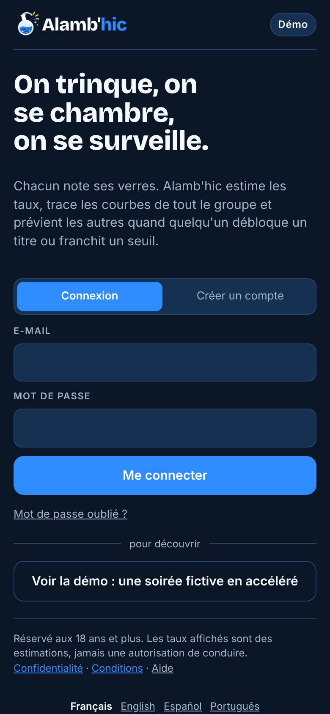
Écran d'accueil
2L'accueil : vos verres partout
Les verres appartiennent au joueur : on les note partout, seul, en soirée ou entre potes. Hors soirée, l'accueil a quatre onglets en bas de l'écran :
Moi : votre taux, l'avatar avec, juste dessous, votre titre actuel (le dernier gagné, celui que vos potes voient dans Potes, Amis et Groupes), la jauge, les boutons de boisson, vos repas et la courbe de la session en cours. Les autres titres de la session sont regroupés dans « Titres de la session ». Si vous êtes dans une soirée à code en cours, une carte « Soirée en cours » le rappelle : vos verres y comptent aussi.
Soirées : les soirées à code en cours ou à venir (créer, rejoindre), puis l'historique de vos sessions et soirées.
Agenda : le calendrier de votre consommation.
Groupes : vos groupes de potes, leur frise des taux et les membres.
Au premier verre d'alcool d'une session, Alamb’hic propose de noter votre dernier repas (facultatif, on peut passer).
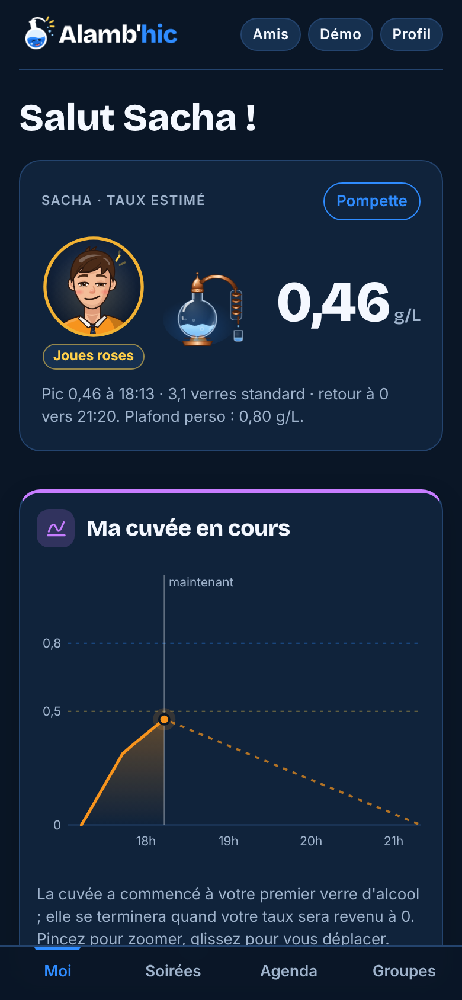
Moi : la session en cours
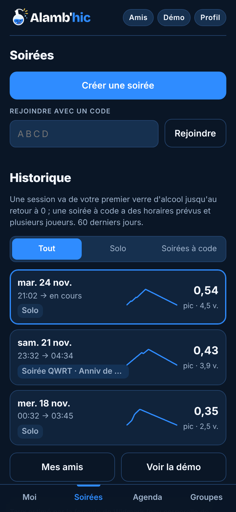
Soirées et historique
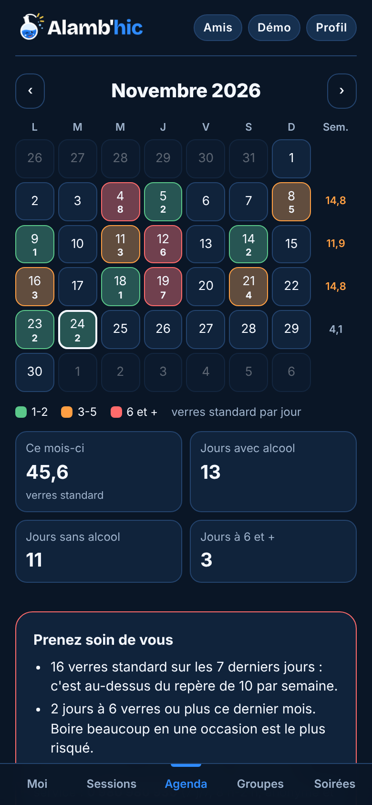
Agenda
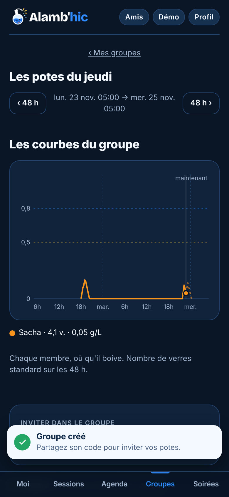
Groupe de potes
3Les sessions
Une session commence à votre premier verre d'alcool et se termine quand votre taux estimé revient à 0. Le découpage est automatique : un verre bu après le retour à 0 ouvre une nouvelle session. Les verres d'une soirée à code font partie de la session (elle porte alors le nom de la soirée).
Le lieu : sur l'écran Moi, au-dessus des boissons, « Où êtes-vous ? » ouvre le sélecteur. On touche un favori ou on tape un autre lieu (« La Folie Douce », « chez Paul ») ; « Ajouter aux favoris » le garde pour la prochaine fois (12 favoris au plus, « Gérer les favoris » pour en retirer). « Autour de moi » demande la position (une fois, avec l'autorisation du téléphone) et liste les 8 bars, pubs, restaurants, cafés et boîtes de nuit les plus proches d'après OpenStreetMap, avec leur distance ; un toucher suffit. Pour un lieu privé, « Chez moi » est toujours proposé (vos amis lisent « chez lui » ou « chez elle »), ou l'on tape « chez Paul », « camping »… La position n'est pas enregistrée : seul le nom choisi l'est. Quand vous choisissez un favori juste après vous être localisé, sa position est retenue sur ce téléphone seulement ; la fois suivante, si la localisation est déjà autorisée, le sélecteur propose « Vous êtes Chez moi ? ». Le lieu vaut pour la session en cours, verres déjà notés compris, et pour les verres des 10 heures qui suivent ; « Aucun lieu » l'efface. Il s'affiche sur la carte de la session dans l'historique, dans le détail de la session, sous le nom du membre dans les groupes pendant qu'il boit, et dans les notifications des potes : « Kiki remet le facteur sur le vélo – à La Folie Douce ».
Elles sont dans l'onglet Soirées, rubrique « Historique », mêlées aux soirées à code par date ; un filtre affiche Tout, Solo ou Soirées à code. Chaque carte porte une pastille « Solo » ou « Soirée ABCD ». Une soirée à code où vous n'avez rien bu apparaît aussi. La liste montre, pour chaque session : la date, l'heure de début et de fin (ou « en cours »), une mini-courbe, le pic et le nombre de verres standard. En touchant une session : sa courbe seule, du premier verre au retour à 0 (fini les courbes trop larges), le pic et son heure, les verres standard, les verres d'alcool et d'eau, et la liste des verres ; pour une session de soirée, « Voir la soirée » ouvre les courbes de tout le groupe.
4L'agenda
Le calendrier du mois colore chaque jour selon les verres standard bus (heure de Paris), d'après les repères de Santé publique France :
Couleur
Verres standard dans la journée
Vert
1 à 2
Orange
3 à 5
Rouge
6 et plus (alcoolisation ponctuelle importante)
La colonne « Sem. » donne le total de chaque semaine, en orange au-delà de 10. En touchant un jour : le détail. Dessous : le total du mois, les jours avec et sans alcool, les jours à 6 et plus.
Suivi bienveillant : le message complet est sous le calendrier ; sur l'écran Moi, un bouton ⚠ (orange, ou rouge après un jour à 6 et plus) apparaît à côté de l'avatar et ouvre le message au toucher (« Fermer » le replie). Il s'affiche si vous dépassez 10 verres standard sur 7 jours, si vous avez eu un jour à 6 ou plus ce dernier mois, ou si vous avez bu presque tous les jours de la semaine. Elle rappelle, sans juger, Alcool info service : 0 980 980 930 (7 j/7, 8 h-2 h, anonyme et non surtaxé) et alcool-info-service.fr. Sinon, une carte verte indique que vous êtes dans les repères.
5Les groupes de potes
Un groupe réunit des amis qui veulent voir les courbes les uns des autres en continu, sans code de soirée : chaque membre voit les courbes de tous, quel que soit l'endroit où chacun boit.
Créer : onglet Groupes → nom → « Créer ». Un code de 6 caractères est créé.
Inviter : « Partager le lien » (/?groupe=CODE) ; l'ami qui l'ouvre rejoint le groupe après connexion. Ou il saisit le code dans « Rejoindre avec un code ». 30 membres au plus.
La frise des taux, en grand : les courbes de tous les membres par créneaux de 48 h (le dernier va jusqu'à 6 h après maintenant) ; « ‹ 48 h » et « 48 h › » naviguent dans le temps.
Les membres, dessous, du plus haut taux au plus bas : avatar, titre actuel (celui de leur session en cours), verres standard sur 48 h et taux actuel en grand avec son état (pic du créneau pour un créneau passé).
Quitter : « Quitter le groupe » ; les autres ne voient plus vos courbes. Un groupe vide est supprimé.
6Les soirées à code
Créer une soirée
Onglet Soirées → « Créer une soirée » → nom (facultatif), début et fin prévus (par défaut ce soir 20 h, pour 8 h ; 48 h au plus) → « Créer la soirée ». Un code de 4 lettres est généré (sans I, L ni O pour éviter les confusions). La courbe de la soirée va du début à la fin prévus ; le taux de chacun tient compte de tous ses verres, même notés avant, mais seuls les verres et titres de la soirée y apparaissent.
Un verre noté pendant la soirée (à partir d'1 h avant le début) s'y rattache automatiquement. Avant : « La soirée commence … » ; après la fin : « Soirée terminée », et les verres se notent depuis l'accueil. Le code en haut de l'écran ramène à l'accueil sans quitter la soirée.
Inviter
« Copier l'invitation » ouvre le partage du téléphone, ou copie le message « Rejoins ma soirée Alamb’hic avec le code … » à coller dans le groupe.
Rejoindre
Saisissez le code dans « Rejoindre avec un code ». Rejoindre une soirée vous fait quitter automatiquement la précédente : on ne joue qu'à une soirée à la fois.
Quitter
Profil → « Quitter la soirée ». Vos verres restent comptés dans votre suivi personnel.
Temps réel
Chaque verre ajouté, chaque titre et chaque seuil est diffusé immédiatement à tous les joueurs. Le serveur renvoie aussi l'état de la soirée chaque minute, pour que les taux et les titres de redescente avancent même quand personne ne boit.
7Noter ses verres
Boisson
Volume
Degré
Bière
25 cl
5 %
Pinte
50 cl
5 %
Vin
12 cl
12 %
Champagne
12 cl
12 %
Shot
4 cl
40 %
Cocktail
20 cl
10 %
Cidre
25 cl
5 %
Eau
25 cl
0 %
Verre perso : indiquez le volume en cl et le degré, puis « Ajouter ». Un degré de 0 compte comme une boisson sans alcool.
Bu plus tôt : « il y a 15 min », « 30 min » ou « 1 h » avant de toucher la boisson. Un verre peut être noté jusqu'à 3 h après coup.
Sam : « Je suis Sam ce soir » limite vos boissons à l'eau et aux boissons sans alcool, et vous donne le titre « Sam de la soirée ». Impossible si vous avez déjà bu de l'alcool dans la soirée.
Confirmation : le bouton touché affiche un indicateur d'envoi, puis passe au vert avec une coche ; un bandeau « Verre enregistré » rappelle la boisson et l'heure. « Annuler », dans les 6 secondes, retire le verre sans laisser de trace. Un second appui pendant l'envoi est ignoré : plus de verre compté deux fois.
Supprimer un verre : la croix à droite, pendant 3 h. Chaque suppression apparaît dans le fil de la soirée.
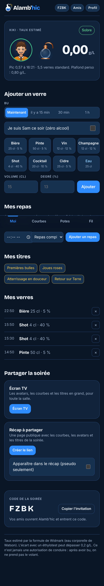
Écran Moi
8Les repas
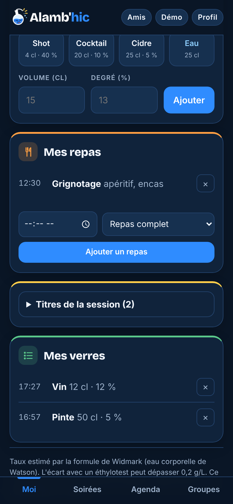
Mes repas en cours de soirée
Un repas ralentit le passage de l'alcool dans le sang et baisse le pic : Alamb’hic tient compte de vos repas pour chaque verre bu de 30 minutes avant le repas jusqu'à la fin de son effet.
Type de repas
Exemples
Absorption
Effet pendant
Alcool qui passe
À jeun
—
30 min
—
100 %
Grignotage
apéritif, encas
45 min
1 h 30
95 %
Repas léger
salade, sandwich
60 min
2 h 30
90 %
Repas complet
plat, féculents
75 min
4 h
85 %
Repas copieux
repas de fête
90 min
5 h
80 %
Au premier verre
Noter un repas n'est jamais obligatoire. Au premier verre d'alcool d'une session, si aucun repas n'est noté depuis 5 h, une fenêtre « Votre dernier repas ? » demande son heure et son type (léger, complet, grignotage…) : « Noter le repas et le verre » enregistre les deux ; « Passer », « Rien mangé depuis ce matin » ou la croix ferment la fenêtre et notent le verre quand même (compté à jeun). Elle ne revient pas avant 8 h. L'eau ne la déclenche jamais.
Ajouter un repas en cours de soirée
Section « Mes repas » de l'écran Moi : heure (obligatoire), type, « Ajouter un repas ». La croix supprime un repas noté par erreur. Les repas des dernières 24 h sont pris en compte, dans toutes vos soirées.
La question à l'heure des repas
Uniquement sur les vrais créneaux de repas, entre 12 h et 14 h 30 puis entre 19 h 30 et 22 h, et si aucun repas n'est noté, Alamb’hic demande « Avez-vous déjeuné ? » ou « Avez-vous dîné ? ». Pour répondre oui, indiquez l'heure du repas et son type, puis « Valider » ; « Pas encore » repose la question 45 minutes plus tard, « Je ne mangerai pas » la fait taire jusqu'au repas suivant.
9Le taux estimé
Alamb’hic estime votre taux minute par minute avec la formule de Widmark et l'eau corporelle de Watson :
Alcool d'un verre : volume × degré × 0,789 g/ml (10 g = un verre standard).
Eau corporelle : selon le sexe, l'âge, la taille et le poids.
Absorption progressive sur 30 min à jeun, jusqu'à 90 min après un repas copieux, avec une part d'alcool réduite (voir « Les repas »).
Élimination : 0,15 g/L par heure.
État affiché
Taux estimé
Sobre
moins de 0,2 g/L
Pompette
0,2 à 0,5 g/L
Interdit de conduire
à partir de 0,5 g/L
Au-dessus du plafond
à partir de votre plafond
Alerte
à partir de 1,5 g/L
L'écran Moi montre aussi le pic de la soirée, le nombre de verres standard et l'heure estimée du retour à 0.
La jauge alambic : à côté de l'avatar, un alambic se remplit de potion bleue à mesure que le taux monte : ballon en verre (surface en vagues, bulles, reflets), chapiteau de cuivre riveté, col de cygne, serpentin et petite fiole qui reçoit les gouttes ; un brûleur dont la flamme grandit avec le taux. Elle est volontairement indicative, sans graduation : le chiffre exact reste affiché à côté. Les bulles remontent quand le taux monte et redescendent quand il baisse ; de la vapeur s'échappe au-delà de la moitié. À chaque verre d'alcool, une goutte vole du bouton touché jusqu'à l'alambic, tombe dans le col, fait des ronds et des remous à la surface, et le niveau monte avec un léger rebond.
Une estimation, jamais une autorisation de conduire. L'écart avec un éthylotest peut dépasser 0,2 g/L. Après avoir bu, on ne prend pas le volant.
10Courbes, potes et fil
Zoom et déplacement : sur toutes les courbes (soirée, session, groupe), pincez avec deux doigts pour zoomer sur une période (jusqu'à 20 minutes), glissez un doigt de gauche à droite pour vous déplacer, et touchez deux fois (ou « Vue entière ») pour revenir à la vue complète. Les graduations s'affinent avec le zoom (jusqu'aux quarts d'heure). Sur ordinateur : Ctrl + molette pour zoomer, Maj + molette pour se déplacer.
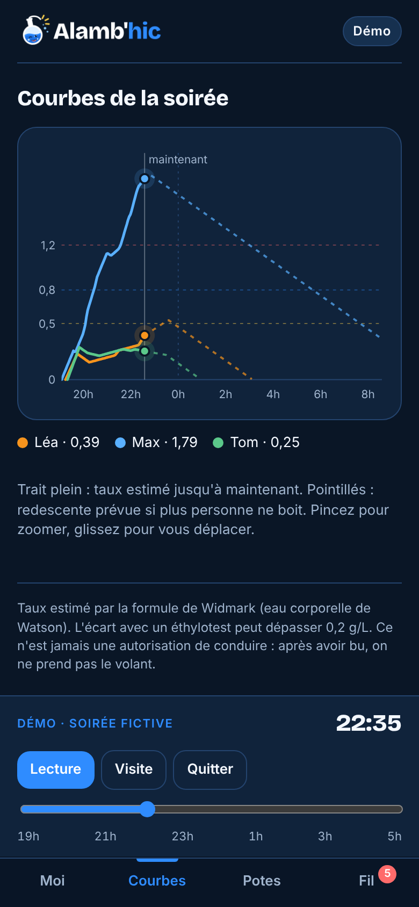
Courbes de la soirée
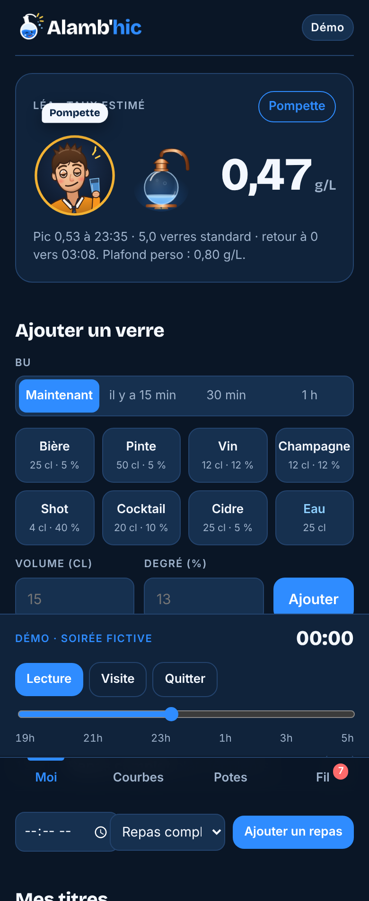
Classement
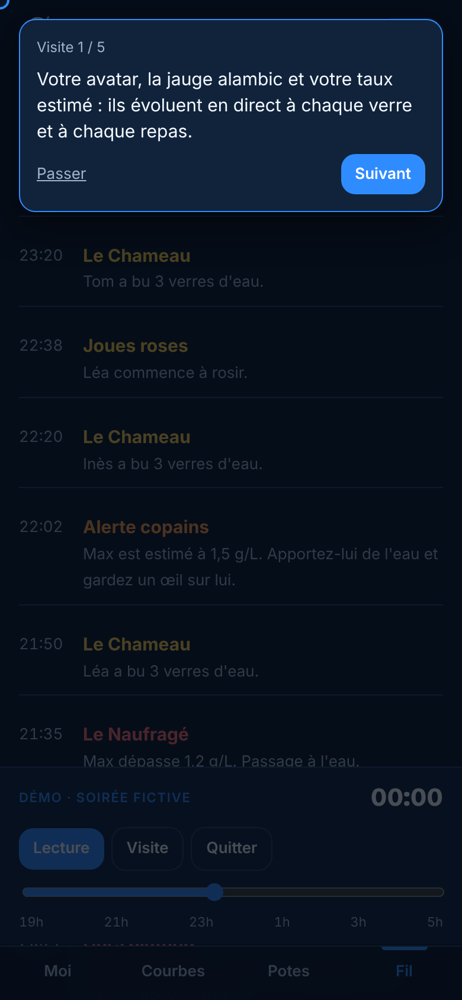
Fil de la soirée
Courbes : une couleur par joueur, seuils 0,5 / 0,8 / 1,2 en pointillés, trait plein jusqu'à maintenant et pointillés pour la redescente prévue.
Potes (en direct) : une carte par joueur avec son avatar, son taux, sa tendance façon bourse sur les 15 dernières minutes (▲ ça monte, ▼ ça redescend, en g/L par heure), une mini-courbe des 2 dernières heures avec la redescente prévue, et son dernier titre. Le bouton « Points » affiche le classement des titres : trié par points, avec le pic et les titres de chacun.
Fil : tous les titres, alertes et suppressions de verres, du plus récent au plus ancien. La pastille rouge sur l'onglet compte les nouveautés non lues.
11Titres et points
Titre
Condition
Points
Premières bulles
0,2 g/L
+10
Joues roses
0,4 g/L
+10
Clés confisquées
0,5 g/L (information)
0
Philosophe de comptoir
0,8 g/L, dernier titre à gagner en montant
+10
Hors plafond
dépasser son plafond perso (s'il est sous 1,2)
−15
Le Naufragé
1,2 g/L
−15
La Fusée
+0,5 g/L en une heure
−15
Alerte copains
1,5 g/L : les amis sont appelés à aider
0
Alerte rouge
2 g/L : rester avec la personne, 15 en cas de signes graves
0
Atterrissage en douceur
redescendre sous 0,2 après avoir dépassé 0,4
+10
Retour sur Terre
revenir à 0 après avoir dépassé 0,2
+10
Le Chameau / L'Oasis
3 / 6 verres d'eau
+10 chacun
Sam de la soirée
jouer Sam
+10
12Notifications
Chaque titre et chaque seuil apparaît en haut de l'écran sur tous les téléphones de la soirée, une notification à la fois : les suivantes attendent leur tour (le compteur « +2 » l'indique). Chaque notification a une icône et une couleur par type (doré pour un titre, rouge pour une honte, orange pour une alerte), et une barre qui montre le temps restant ; un toucher la ferme. Les alertes vibrent deux fois et restent 12 secondes.
Quand un titre est débloqué, l'icône de la notification fait « hic ! » avec quelques étincelles dorées. Sur l'écran Potes, la flèche de tendance clignote quand elle change de sens. Les animations sont coupées si « réduire les animations » est activé sur le téléphone.
Les confirmations de vos propres actions (verre, repas, invitation copiée, erreur) s'affichent à part, dans un bandeau en bas de l'écran, pour ne jamais se mélanger aux notifications des amis.
Titres : message moqueur.
Honte : passage à l'eau.
1,5 g/L : « apportez-lui de l'eau et gardez un œil sur lui ».
2 g/L : rester avec la personne ; si elle vomit, ne répond plus ou respire mal, appeler le 15.
Notifications appli fermée (push)
Profil → Notifications → « Activer sur cet appareil » : le navigateur demande l'autorisation, puis les notifications arrivent même appli fermée. Cinq catégories se règlent une à une : alertes (alertes copains et rouges des joueurs de la soirée, qui restent affichées et vibrent), titres de la soirée, titres des amis dans leurs propres soirées (s'ils partagent leur taux), rappel repas (12 h 45 et 20 h 15 si vous êtes en soirée sans repas noté depuis 3 h) et badges. « Tester » envoie une notification d'essai, « Couper » désabonne l'appareil. Un titre n'est envoyé qu'aux autres joueurs, une seule fois, et seulement s'il date de moins de 30 minutes. Sur iPhone, il faut d'abord installer l'appli sur l'écran d'accueil. Dans l'appli Android (enveloppe), les notifications demanderont Firebase (étape suivante).
Expressions des potes
Vos amis et les membres de vos groupes reçoivent des notifications tirées des expressions françaises de l'alcool, et vous les leurs : « Max remet le facteur sur le vélo » (un verre le lendemain d'une soirée), « tue le ver » (avant midi), « prend l'apéro » (17 h-21 h), « lève le coude » ; puis selon le taux « a un coup dans le nez » (0,5 g/L), « a du vent dans les voiles » (0,8), « est rond comme une queue de pelle » (1,2, avec « un grand verre d'eau pour lui ? ») ; « met de l'eau dans son vin » (3 verres d'eau) ; et à 10 h « a sûrement mal aux cheveux ce matin » après une session montée à 1 g/L. Quand le lieu de la session est indiqué, il s'ajoute au message : « Kiki remet le facteur sur le vélo – à La Folie Douce ». Chacun choisit ce qu'il reçoit dans Profil → Notifications → « Expressions des potes » : amis et groupes (par défaut), amis seulement, groupes seulement ou rien. Côté envoi, vos amis ne les reçoivent que si vous partagez votre taux avec eux. Chaque expression part une seule fois par session, et au plus une toutes les 30 minutes d'un même joueur.
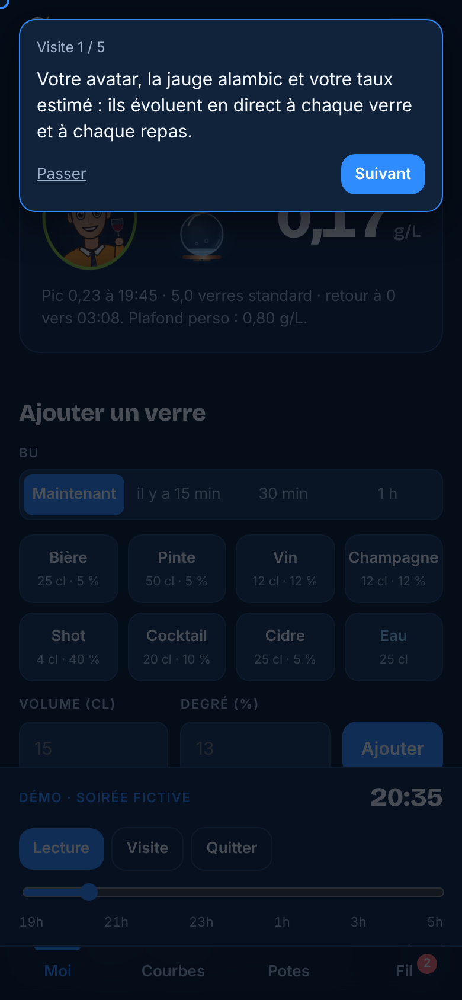
Notifications pendant la démo
13L'avatar
0 · En forme
1 · Premier verre
2 · Détendu
3 · Pompette
4 · Éméché
5 · Fou rire
6 · Hilare
7 · Ça tourne
8 · Les étoiles
9 · KO
Chaque joueur a un avatar en portrait dans un cercle, avec une chemise à sa couleur, sur l'écran Moi, l'écran Potes et la liste d'amis. Il passe par 10 stades ; le cercle passe du vert au rose :
Stade
À partir de
Ce qu'on voit
0 · En forme
0
grand sourire, yeux grands ouverts, cravate bien nouée
1 · Premier verre
0,05 g/L
sourire, joues qui rosissent
2 · Détendu
0,2
paupières mi-closes, sourire tranquille
3 · Pompette
0,35
sourire en coin, barbe naissante, col ouvert, petit « hic » jaune
4 · Éméché
0,5
yeux tombants, bouche de travers, cheveux en bataille, bulles, clés barrées
5 · Fou rire
0,65
yeux plissés de rire, langue tirée, chemise froissée
6 · Hilare
0,8
éclat de rire, tache sur la chemise, cravate de travers
7 · Ça tourne
1,0
regard vague, grimace, sueur, spirale au-dessus de la tête
8 · Les étoiles
1,2
bouche grande ouverte, langue pendante, couronne d'étoiles qui tourne
9 · KO
1,5
tête affaissée, yeux fermés, bave, « z z », verre d'eau à côté
Les seuils sont les mêmes pour tous : le plafond perso ne change pas l'avatar (il sert aux titres et aux points). Rougeurs, nez rouge et teint rouge augmentent en continu à l'intérieur de chaque stade.
Avatar vivant : il respire, cligne des yeux de temps en temps et se balance de plus en plus à mesure que le taux monte ; du stade « Éméché » aux « Étoiles », il a le hoquet, et à partir de « Ça tourne » ses yeux flottent. Il tient le dernier verre noté (bière avec mousse et bulles, vin, flûte de champagne, cocktail avec cerise et citron, shot, eau avec glaçons) : à chaque verre noté, il le porte à sa bouche pour une gorgée, et un point pulse sur la courbe à l'instant présent. À chaque changement de stade, il sursaute et une bulle annonce le nouveau stade, sur l'écran Moi, l'écran Potes et la liste d'amis. Tout s'arrête si « réduire les animations » est activé sur le téléphone.
Pendant 25 minutes après chaque verre, l'avatar tient le bon modèle (bière avec mousse, vin rouge, flûte, shot, cocktail ou eau). Quand le taux redescend, il tient un verre d'eau.
14Le mode démo
Le bouton « Démo » en haut de l'écran lance une soirée fictive, même sans compte : Léa (raisonnable, c'est vous), Max (qui dérape), Tom (modéré) et Inès (Sam).
Curseur : avancez ou reculez de 19 h à 6 h ; les titres déjà passés ne sont pas renotifiés.
Lecture : la soirée défile en accéléré, 5 minutes toutes les demi-secondes.
On peut ajouter ou supprimer des verres pour Léa : rien n'est enregistré.
Quitter revient à votre vraie soirée.
Visite guidée
Au premier lancement de la démo, cinq bulles expliquent l'écran : l'avatar et la jauge, les boissons, le curseur du temps, les onglets Courbes et Potes, puis le fil. « Suivant » avance, « Passer » ferme ; le bouton « Visite » de la barre de démo la relance.
Banc de test sur ordinateur
La page /demo.html (lien « Banc de test (ordinateur) » dans le Profil des admins) affiche la même soirée fictive en grand : les quatre joueurs côte à côte (avatar, alambic, taux, tendance, titres obtenus), les courbes de la soirée et le fil des titres. Une frise en bas fait défiler la soirée de 19 h à 6 h ; chaque point de la frise est un titre, cliquable pour y sauter. Lecture ×1, ×5 ou ×15, touche Espace pour lancer ou arrêter, flèches pour avancer de 5 minutes (30 avec Maj).
15Suivi des 7 derniers jours
Voir aussi l'onglet Agenda, plus complet. La page Profil compte vos verres standard des 7 derniers jours, toutes soirées confondues, et les compare aux repères de Santé publique France : 10 verres par semaine au plus, 2 par jour, et des jours sans alcool.
Les barres passent en rouge au-delà de 2 verres standard dans la journée ; le nombre de jours sans alcool est indiqué.
À venir (étape 4) : bilan mensuel, objectifs perso, trophées long terme, défis entre amis.
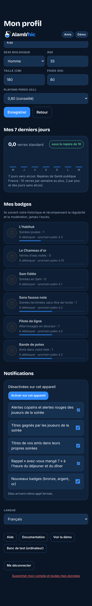
Profil et suivi
16Fiabilité et anti-triche
Le classement récompense la modération : la triche consisterait surtout à sous-déclarer. Règles en place :
taux, titres et points calculés par le serveur, identiques pour tous ;
un verre ne peut pas être antidaté de plus de 3 h ;
un verre ne peut être supprimé que pendant 3 h, et la suppression apparaît dans le fil ;
6 verres d'alcool au plus en 10 minutes ;
Sam ne peut noter que des boissons sans alcool, et ne peut pas devenir Sam après avoir bu.
À venir (étape 3) : éthylotest Bluetooth et recalibrage personnel, validation des verres par les amis, photo du verre, indice de fiabilité ; puis gorgées détectées par la montre (étape 4).
17Les amis
Le bouton Amis, en haut de l'écran, ouvre la liste de vos amis, en soirée ou non.
Ajouter un ami
Chaque joueur a un code ami de 6 caractères. « Partager mon lien » envoie un lien d'invitation : la personne qui l'ouvre se connecte, son écran Amis s'ouvre avec votre code déjà saisi, et il lui suffit de toucher « Ajouter ». On peut aussi taper le code à la main. L'autre doit accepter la demande (« Demandes reçues ») ; si les deux s'ajoutent, l'amitié est immédiate.
Vos amis en direct
Pour chaque ami en soirée : son avatar, son taux, sa tendance façon bourse, une mini-courbe des 2 dernières heures et son dernier titre. Les autres apparaissent dans « Les autres ». La liste se met à jour toutes les 30 secondes. La soirée de vos amis (son code, les autres joueurs) n'est jamais montrée.
Confidentialité
« Mes amis voient mon taux en direct pendant mes soirées » est activé par défaut et se coupe d'un geste ; seuls les amis acceptés en profitent. « Retirer » (deux touches pour confirmer) supprime un ami.
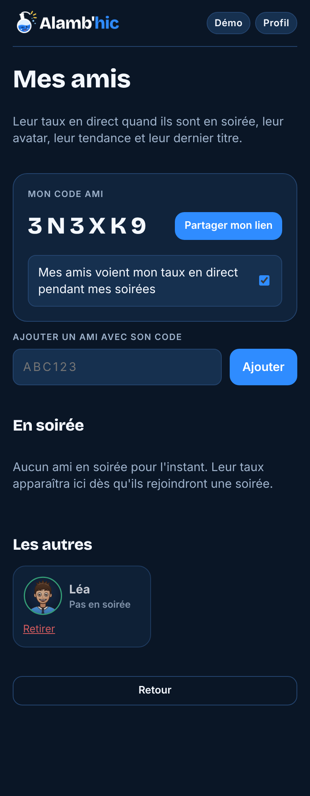
Mes amis
18Compte et données
Se déconnecter : Profil → « Me déconnecter ».
Mot de passe oublié : sur l'écran de connexion, « Mot de passe oublié ? » envoie par e-mail un lien valable 1 heure, utilisable une fois ; il ouvre la page « Nouveau mot de passe » et connecte directement. La réponse est la même que le compte existe ou non. Il faut la variable Render RESEND_API_KEY (sinon un message indique que l'envoi n'est pas encore activé).
Pseudo : les pseudos injurieux, ou qui contiennent une adresse, un numéro ou un lien, sont refusés (garde-fou repris d'Airmony, qui servira aussi au futur tchat).
Langue : français, anglais, espagnol ou portugais (Profil → Langue, ou les liens sous l'écran de connexion). Par défaut, la langue du téléphone. L'interface, les titres, les notifications de la soirée et les pages TV et récap sont traduits ; les réponses de l'aide et quelques messages du serveur restent en français.
Supprimer son compte : Profil → « Supprimer mon compte et toutes mes données », puis confirmer. Profil, verres et titres sont effacés définitivement.
Données gardées : e-mail, mot de passe chiffré, profil, verres, repas, titres. Hébergement Render à Francfort (Union européenne).
Consentement : à la création du compte, une case à cocher confirme l'âge (18 ans et plus) et l'accord pour le traitement des consommations, qui sont des données de santé. Avec Google, la même mention s'affiche sous le bouton.
Pages publiques : /confidentialite (données, sous-traitants, durée, droits, CNIL) et /conditions (un jeu et pas une mesure, 18 ans, modération, responsabilité), liées depuis l'écran de connexion. L'adresse de contact vient de la variable Render CONTACT_EMAIL.
19Administration
Comptes admin : variable Render ADMIN_EMAILS (adresses séparées par des virgules). Un admin voit le bouton « Documentation » dans sa page Profil.
Documentation : PDF du dossier docs/ listés dans docs/index.json (titre, description, date, catégorie), accessibles aux seuls admins. Sources dans docs-src/, régénérées par docs-src/build.sh.
Déploiement : chaque envoi sur la branche main de Kiki78test/Alambhic redéploie le service Render.
Variables : DATABASE_URL et SESSION_SECRET (automatiques), GOOGLE_CLIENT_ID (facultatif), ADMIN_EMAILS, CONTACT_EMAIL, MONITOR_KEY et MONITOR_ORIGIN (tableau de bord de contrôle), RESEND_API_KEY, MAIL_FROM et BASE_URL (e-mails), ANTHROPIC_API_KEY (facultatif, assistant de l'aide). Les clés des notifications push (VAPID) sont créées toutes seules et gardées en base. Depuis le 28/11, la réponse de /api/monitor contient une veille de sécurité (échecs et blocages de connexion, pics d’inscriptions, erreurs serveur, requêtes bloquées, redémarrage), affichée en badge 🛡 sur la carte Alamb’hic du centre de contrôle.
Sécurité : GitHub Actions « Sécurité des dépendances » contrôle chaque lundi les failles connues des bibliothèques (échec et e-mail de GitHub si une faille haute ou critique apparaît). À ajouter : une sonde UptimeRobot sur /healthz.
Appli Android : GitHub Actions « Appli Android » fabrique l'APK de test à chaque modification du dossier mobile/ (Releases → « Appli Android (test) »). Voir le chapitre « L'appli Android ».
20Badges à paliers
En plus des titres de soirée, six badges suivent tout votre historique, avec trois paliers : bronze, argent et or. Ils récompensent la régularité et la modération, jamais l'excès. Ils sont dans le Profil, avec le nombre qui manque pour le palier suivant ; un nouveau palier s'annonce par une notification.
Badge
Ce qui compte
Bronze
Argent
Or
L'Habitué
Soirées jouées
3
10
25
Le Chameau d'or
Verres d'eau notés
10
25
50
Sam fidèle
Soirées en Sam
1
3
5
Sans fausse note
Soirées terminées sans titre de honte
2
5
10
Pilote de ligne
Atterrissages en douceur
2
5
10
Bande de potes
Amis dans votre liste
2
5
10
21Écran TV et récap à partager
Écran TV
Écran Moi → « Partager la soirée » → « Écran TV » : un code de 6 caractères s'affiche (valable 12 h). Sur la TV, un vidéoprojecteur ou un ordinateur relié, ouvrez alambhic.onrender.com/tv et saisissez le code. L'écran garde le code et se reconnecte tout seul.
Avatars : chaque joueur en grand, avec son taux, sa tendance et son dernier titre.
Courbes : tout le groupe sur un grand graphique.
Fil : les six derniers titres.
Auto : les trois vues tournent toutes les 15 secondes.
Chaque nouveau titre s'annonce en grand au milieu de l'écran. Le téléphone sert de télécommande : les boutons Auto, Avatars, Courbes et Fil changent la vue de la TV immédiatement.
Récap à partager
« Récap à partager » crée un lien public (/r/…) vers une page avec les joueurs (avatar à leur pic, pic, points, titres), les courbes de la soirée et le fil des titres, plus un bouton « Créer votre soirée sur Alamb'hic ». Seuls les joueurs qui ont coché « Apparaître dans le récap » y figurent, avec leur pseudo seulement ; celui qui crée le lien est coché d'office et peut se décocher. « Supprimer le lien » le désactive. La page n'est pas référencée par les moteurs de recherche.
22Aide
Profil → « Aide », ou le lien « Aide » sous l'écran de connexion. On tape sa question (« pourquoi mon pic baisse après un repas ? ») : l'aide montre les réponses les plus proches parmi 20 questions fréquentes (calcul, repas, plafond, titres, badges, sessions, agenda, groupes, avatar, Sam, erreurs de saisie, soirées, amis, notifications, TV, récap, mot de passe, données, installation, malaise d'un ami). Toutes les réponses sont aussi listées dessous.
Avec la variable Render ANTHROPIC_API_KEY, un assistant reformule une réponse sur mesure, uniquement à partir de cette base, dans la langue de l'appli. La base est dans server/help.js, à tenir à jour quand l'appli change.
23L'appli Android
Le dossier mobile/ contient une enveloppe Capacitor (comme Airmony) qui ouvre l'appli en ligne dans une appli Android : identifiant app.alambhic, icône et écran de démarrage bleu nuit, page « Pas de connexion ».
Fabrication : GitHub → Actions → « Appli Android » (automatique à chaque modification de mobile/, ou « Run workflow »). L'APK est publié dans Releases → « Appli Android (test) ».
Installation : sur le téléphone, télécharger Alambhic-Android-test.apk, l'ouvrir et autoriser l'installation depuis cette source. Chaque nouvelle version s'installe par-dessus (clé de test fixe).
Google Play : avec les secrets ANDROID_KEYSTORE_B64, ANDROID_KEYSTORE_PASSWORD, ANDROID_KEY_ALIAS, ANDROID_KEY_PASSWORD, un fichier .aab signé est aussi fabriqué.
À venir : notifications natives (Firebase), widget « mes potes ». La connexion Google dans l'appli est à vérifier (Google peut refuser les vues web intégrées : utiliser alors l'e-mail et le mot de passe).
AHistorique des versions
Date
Version
Contenu
28/11/2026
0.14
Lieu des sessions : sélecteur avec favoris sur l'écran Moi ; le lieu s'affiche dans l'historique, le détail de la session, les groupes et les notifications des potes (« Kiki remet le facteur sur le vélo – à La Folie Douce »). « Autour de moi » : bars et restaurants proches d'après OpenStreetMap ; « Chez moi » pour les lieux privés ; position des favoris retenue sur le téléphone. Avatar redessiné plus proprement : ombres franches, yeux en amande avec iris, sourcils pleins, mèche avec reflet, cou et chemise ombrés, main qui tient vraiment le verre. Repas plus obligatoires : au premier verre d'une session, une fenêtre facultative demande l'heure et le type du dernier repas (on peut passer ou fermer). Avatar vivant (respiration, clignements, hoquet, gorgée à chaque verre) et verres tenus redessinés ; alambic plus abouti (vagues, serpentin, fiole, brûleur) avec goutte, remous et rebond à chaque verre ; pulsation sur la courbe. Nouveau document : cahier des charges de l'avatar animé Rive.
24/11/2026
0.13
Les verres se notent partout. Nouvel accueil à cinq onglets : Moi (session en cours), Sessions (du premier verre au retour à 0, une courbe par session), Agenda (jours en vert, orange ou rouge selon les verres standard, alertes bienveillantes et Alcool info service), Groupes de potes (courbes de tous les membres par créneaux de 48 h), Soirées à code avec début et fin prévus. Bouton Google sans cadre blanc. Titre actuel affiché sous l'avatar (et vu par les potes, y compris dans les groupes) au lieu de la liste des titres. Alerte de conso : bouton ⚠ à côté de l'avatar, message complet sous l'agenda. Sessions et soirées réunies dans l'onglet Soirées (historique filtrable Tout, Solo, Soirées à code) : quatre onglets. Groupe : grande frise des taux, puis les membres avec leur taux actuel. Zoom aux doigts (pincer) et déplacement (glisser) sur toutes les courbes. Notifications « expressions des potes » (facteur sur le vélo, tuer le ver, vent dans les voiles, mal aux cheveux…) envoyées aux amis et aux groupes, chacun choisissant amis, groupes, tout ou rien.
23/11/2026
0.12
Onze fonctions reprises d'Airmony : badges à paliers (bronze, argent, or), notifications push appli fermée avec 5 catégories, garde-fou sur les pseudos, contrôle de sécurité hebdomadaire, mot de passe oublié par e-mail (Resend), aide avec questions fréquentes et assistant facultatif, visite guidée de la démo, quatre langues (FR, EN, ES, PT), appli Android (enveloppe Capacitor fabriquée par GitHub), écran TV avec télécommande, récap de soirée à partager. Paiements Stripe reportés.
11/11/2026
0.11
Repas : la question « avez-vous mangé ? » ne s'affiche plus que sur les créneaux de déjeuner (12 h-14 h 30) et de dîner (19 h 30-22 h) ; l'heure du repas est toujours à indiquer (plus d'heure pré-remplie, heure à venir refusée). Nouveaux documents : idées venues d'Airmony, titres et expressions.
10/11/2026
0.10
Jauge alambic en verre et cuivre (potion qui monte, bulles, flamme, goutte, vapeur) à la place de la spirale. Verres favoris et catalogue de boissons, IA de design notés pour la suite.
10/11/2026
0.9
Nouvel avatar en portrait dans un cercle, en 10 stades du sourire au KO (cercle du vert au rose, fou rire, spirale, couronne d'étoiles, tête affaissée à 1,5 g/L) ; seuils identiques pour tous, sans lien avec le plafond perso ; sursaut et bulle à chaque changement de stade ; chemise à la couleur du joueur et cravate qui se défait. Gages supprimés : les titres de honte coûtent seulement des points.
10/11/2026
0.8
Avatar vivant : il se balance d'autant plus que le taux monte et sursaute en annonçant son nouvel état (« Pompette », « Au-dessus du plafond »…). Jauge remplacée par une spirale d'alambic indicative à côté de l'avatar. Banc de test sur ordinateur (/demo.html). Nouveau document « Business plan ».
10/11/2026
0.7
Animations : jauge en serpentin d'alambic qui se remplit de potion, goutte qui vole du bouton au tuyau, titre qui fait « hic ! », tendance qui clignote, fiole de chargement. Amis : code ami et lien d'invitation, demandes à accepter, amis en direct (taux, tendance, mini-courbe, dernier titre), partage désactivable. En-tête : Amis et Profil ; Documentation et Démo dans le profil.
10/11/2026
0.6
Notifications refaites (une à la fois, file d'attente, icône, barre de temps) ; confirmation de chaque action (bouton qui passe au vert, bandeau « Verre enregistré » avec Annuler) ; écran « Potes » en direct avec tendance façon bourse, mini-courbe et dernier titre.
10/11/2026
0.5
L'appli devient Alamb’hic (YouDrink déjà pris par une appli américaine) : nom, logo « potion » bleu et blanc, icônes, thème bleu de l'appli, pages légales et documentation. Les noms techniques (dépôt, Render, adresse onrender) restent « youdrink ».
10/11/2026
0.4
Pages publiques « Politique de confidentialité » et « Conditions d'utilisation » ; consentement explicite à la création du compte ; connexion Google active.
10/11/2026
0.3
Repas : saisie des repas du jour avant le premier verre, ajout d'un repas à tout moment, question « avez-vous mangé ? » aux heures des repas ; le type de repas module l'absorption et le pic.
Socle web en ligne sur Render : comptes, soirées par code en temps réel, calcul serveur des taux et des titres, avatar, mode démo, suivi 7 jours, appli installable, premières règles anti-triche.
09/11/2026
proto
Prototype jouable : calcul Widmark, titres et gages, courbes communes, notifications, avatar évolutif, mode démo avec curseur temporel ; cahier des charges.